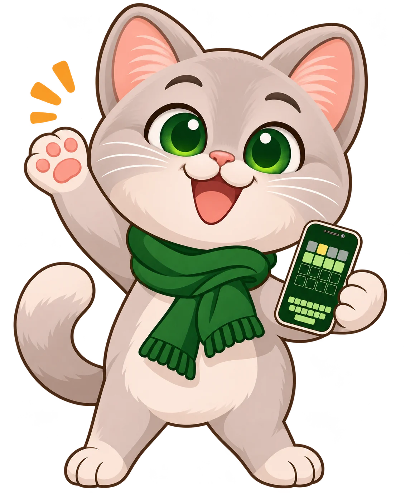
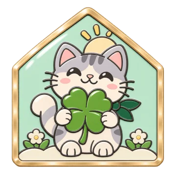
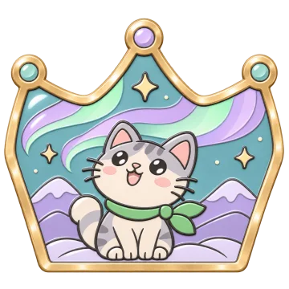
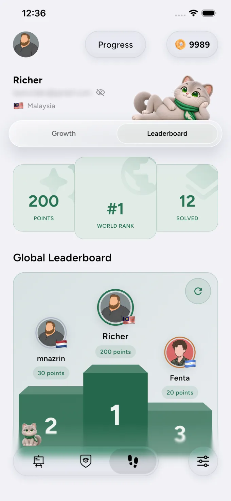
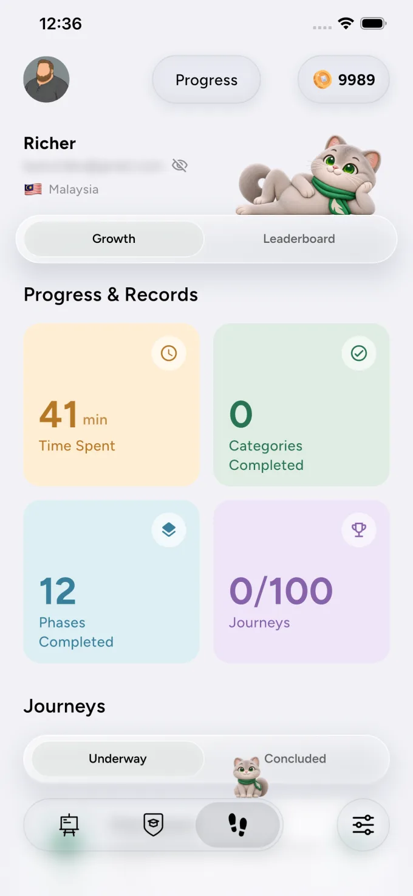

01 / PICK
Nature
& World100 Phase
& World100 Phase
Love &
Friendship100 Phase
Friendship100 Phase
Everyday
Life100 Phase
Life100 Phase
Choose your world.
Follow your curiosity into a category that feels like you.
Pick a world. Find the right words. Make a little magic, one sentence at a time.

No long lessons. No pressure to be perfect. Just a satisfying little game that makes every word count.
Follow your curiosity into a category that feels like you.
Spot each word and bring the sentence to life.
Finish phases, collect badges, and see how far you’ve come.
From quiet forests to faraway places, every category has its own color, mood, and little surprises.
See what’s nextEvery finished phase has a story. Collect delightful enamel-style badges and make your journey your own.
More to discover



See your progress grow, revisit your records, and climb the leaderboard at your own pace.
It’s a word-finding game where you complete sentences, explore themed worlds, and celebrate your progress along the way.
Choose a category and phase, then tap the correct words in order to complete the sentence. Each phase is a fresh little challenge.
Absolutely. Pick a world whenever you like and return to your journey whenever a little wordplay sounds good.
Badges mark the milestones you reach as you play. Collect them and watch your own story take shape.